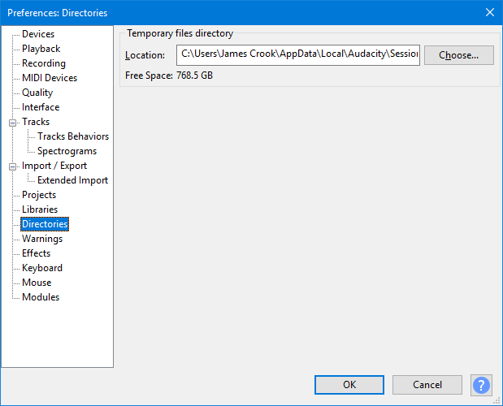

Directories Preferences
- Accessed by: (on a Mac )
- 
- Directories Preferences dialog showing the default temporary session data location on Windows.
- Click on any other Preferences sections in the above image to read about those Preferences.
Temporary files directory
- Location: Sets the location of Audacity's temporary directory for session data. This is used whenever there is audio data that has never been saved as an Audacity project.
To change the location of the temporary directory, press , select the directory you require and click . Audacity will then create a session workfile sub-directory in the directory you selected. Alternatively type the path required for the temporary directory into "Location" and Audacity will use that exact path, creating the new directory if needed.
Exit and restart Audacity for changes to the temporary directory to take effect.
Make sure the temporary directory is located on a fast (local) disk drive with plenty of free space. Avoid using network drives as these may be too slow for reliable recording. A RAM drive will always be quicker than a hard or solid state drive for recording and editing, but unless the RAM contents are saved to a physical drive the data will be lost when the computer powers down.
- Windows: C:\Users\<your username>\AppData\Local\Audacity\SessionData
- macOS/Mac OS X: /Users/<your username>/Library/Application Support/SessionData
- GNU/Linux: /var/tmp/audacity-<your username>
| If your drive does not have sufficient space, you can reduce the space taken by temporary data by going to the Quality tab of Preferences and reducing the default sample format and sample rate. Reducing the sample rate will noticeably reduce higher frequencies, so is only recommended for speech data. |
{kind=link}